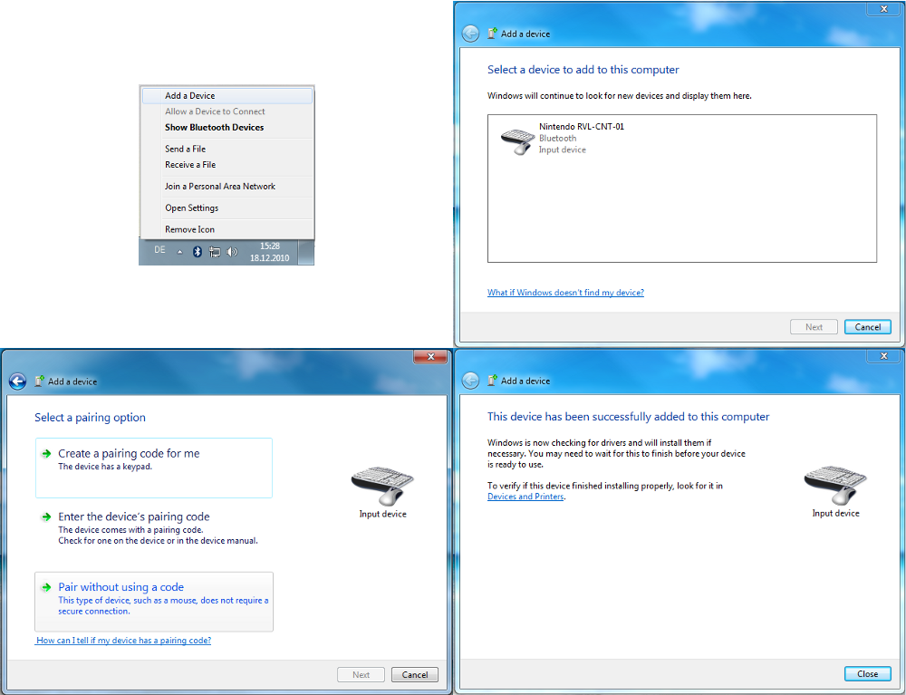
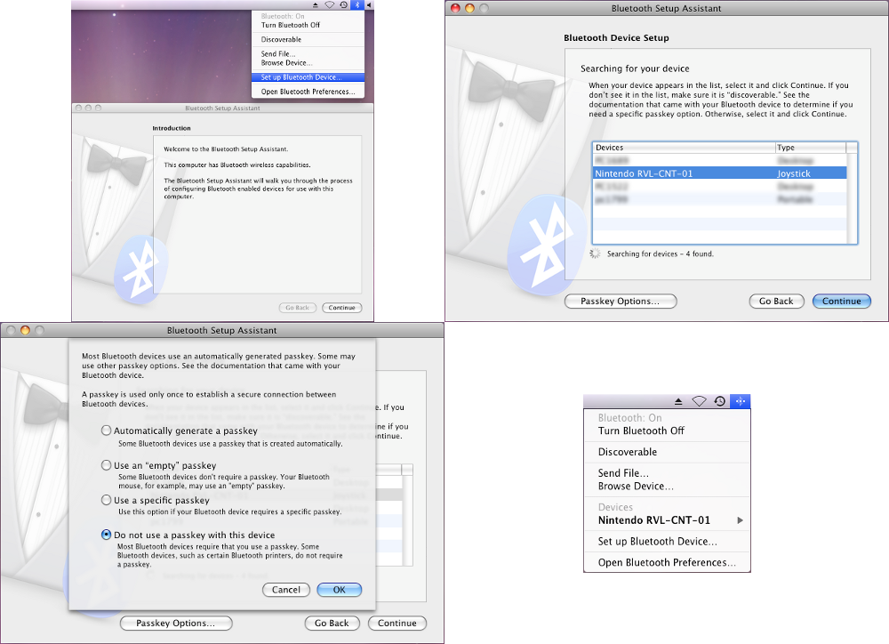

Introduction
The Wii Remote is actually the Wii's main input device.
It is a wireless device, using Bluetooth technology (HID protocol) to communicate with the host, in this case with the computer. Therefore you need a Bluetooth dongle (maybe your computer has already an integrated Bluetooth receiver).
About the Wii Remote
-
Input Features
- Buttons
- Accelerometer
- IR Camera
-
Feedback features
- Rumble
- Player LEDs
Connect the Wii Remote
First of all the Wii Remote needs to be connected with your PC or Mac before you can use it. You can do this in different ways either you pressing button 1 and 2 simultaneously or the red synchronization button under the battery cover. After that the Wii Remote changes into a discoverable mode. If you don't connect the Wii Remote with your computer within 20 seconds, the Wii Remote will turn itself off. Holding down the two buttons continuously will force the Wii Remote to stay in discoverable mode without turning off. On every operating system you should search a Bluetooth device called 'Nintendo RVL-CNT-01' and check the option not to enter a key or pin.The detailed connection process depends on the operating system you use:
-
Windows:
If your operating system is Windows XP SP3 or higher you can use the Windows stack shown below. Otherwise you should install another stack like Widcomm, Toshiba stack or BlueSoleil.
Image: Windows 7 -
Linux:
If you use Linux, BlueZ is already included with the official Linux kernel distributions and is used by Instant Player. So you only have to put the Wii Remote in discoverable mode when starting Instant Player.
-
Mac OS X:
Connect your Wii Remote according to the following steps and you are ready to use it.
Image: Mac OS X
Use of the Wii Remote
First, we create a IOSensor with type='Wii' like in the following Code Example:Code: Wii IOSensor
<IOSensor DEF='Wiimote' type='Wii' device='0'> <!--Buttons--> <field accessType='outputOnly' name='A' type='SFBool'/> <field accessType='outputOnly' name='B' type='SFBool'/> <field accessType='outputOnly' name='Up' type='SFBool'/> <field accessType='outputOnly' name='Down' type='SFBool'/> <field accessType='outputOnly' name='Left' type='SFBool'/> <field accessType='outputOnly' name='Right' type='SFBool'/> <field accessType='outputOnly' name='Minus' type='SFBool'/> <field accessType='outputOnly' name='Plus' type='SFBool'/> <field accessType='outputOnly' name='One' type='SFBool'/> <field accessType='outputOnly' name='Two' type='SFBool'/> <field accessType='outputOnly' name='Home' type='SFBool'/> <!--Acceleration + IR--> <field accessType='outputOnly' name='Orientation' type='SFVec3f'/> <field accessType='outputOnly' name='Acceleration' type='SFVec3f'/> <field accessType='outputOnly' name='IRSource' type='MFVec3f'/> <!--Led's + Rumble--> <field accessType='inputOnly' name='SetLEDs' type='SFInt32'/> <field accessType='inputOnly' name='ActivateRumble' type='SFBool'/> </IOSensor>
Device Field
You can use the device field when you need more than one Wii Remote. You can also write an extension name to get the first Wii Remote with this extension. For example, when you want access the second Wii Remote, you can write device='1' (take into account that a device index starts at zero rather than one). If you want to access a BalancedBoard you can write device='balancedboard' or device='nunchuk' for the first Wii Remote with Nunchuk attachment.Small example
Code: Rumble when pressing A
<IOSensor DEF='Wiimote' type='Wii' device='0'> <field accessType='outputOnly' name='A' type='SFBool'/> <field accessType='inputOnly' name='ActivateRumble' type='SFBool'/> </IOSensor> <ROUTE fromNode='Wiimote' fromField='A' toNode='Wiimote' toField='ActivateRumble'/>
Expansions
Nunchuck
You can get data from the following fields:Code: Nunchuck fields
<IOSensor DEF='Wiimote' type='Wii' device='nunchuk'> <field accessType='outputOnly' name='NunchukC' type='SFBool'/> <field accessType='outputOnly' name='NunchukZ' type='SFBool'/> <field accessType='outputOnly' name='NunchukAnalogStick' type='SFVec2f'/> <field accessType='outputOnly' name='NunchukAcceleration' type='SFVec3f'/> </IOSensor>
Balanced Board
The Balanced Board contains four pressure sensors in every corner:Code: Balanced Board fields
<IOSensor DEF='Wiimote' type='Wii' device='balancedboard'> <field accessType='outputOnly' name='BalancedBoardTopLeft' type='SFFloat'/> <field accessType='outputOnly' name='BalancedBoardTopRight' type='SFFloat'/> <field accessType='outputOnly' name='BalancedBoardBottomLeft' type='SFFloat'/> <field accessType='outputOnly' name='BalancedBoardBottomRight' type='SFFloat'/> </IOSensor>